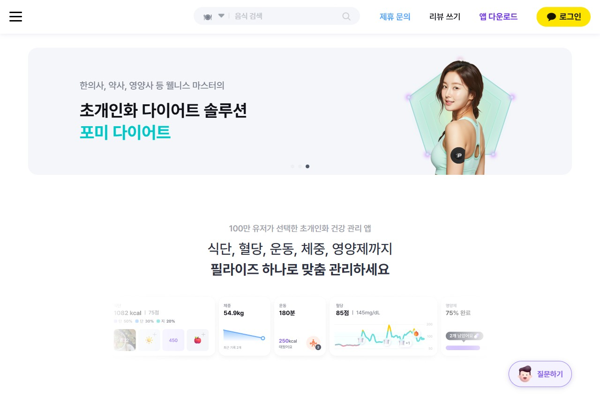
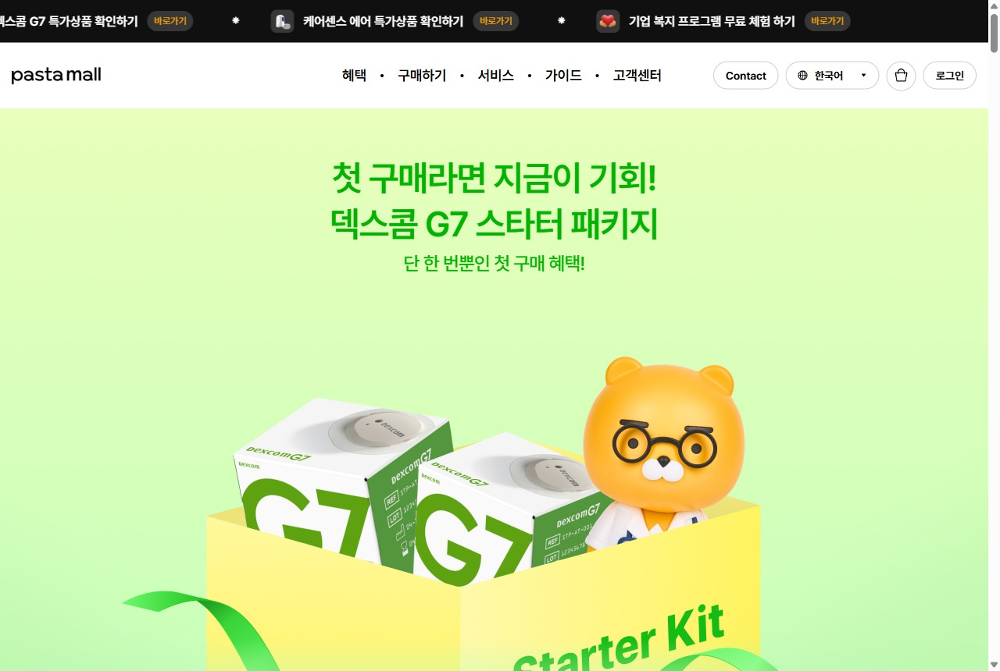
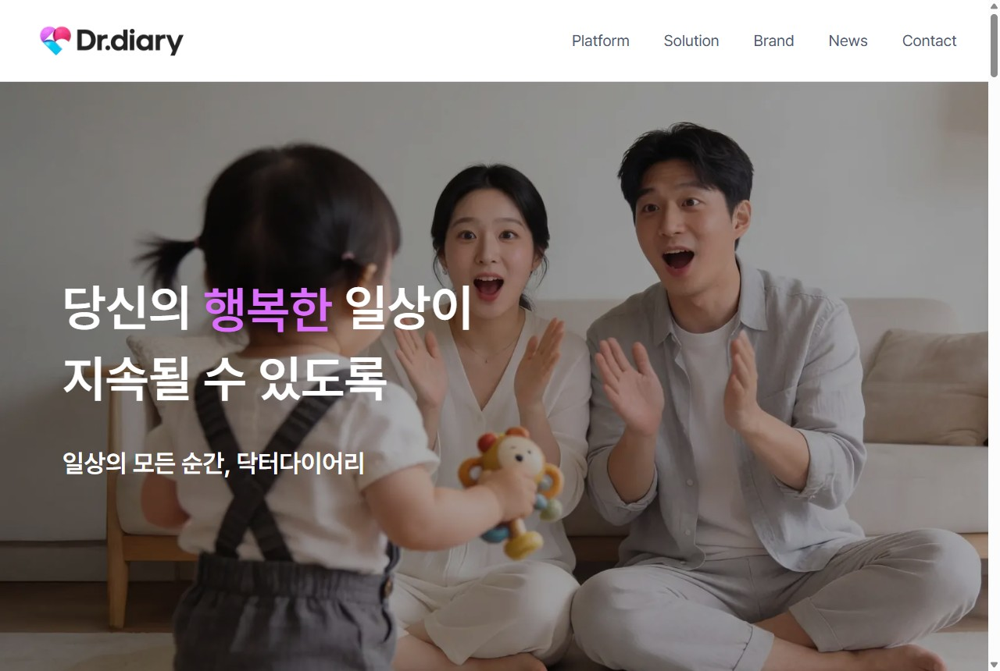

관리 기능을 이식해 USP로 만들고, 당뇨 페르소나가 검색하는 곳에서 Paid·시딩으로 폭발적으로 모객합니다. 모든 전략에는 실제 캡처한 벤치마킹 레퍼런스가 붙습니다.
나만의닥터는 트래픽 1위지만, 그것이 진료·재진 매출로 '환전'되지 않는 것이 본질 문제라고 진단. 트래픽을 매출로 바꾸는 전환·재진 엔진이 필요하다고 제안했습니다.
"그렇다면 당뇨 환자를 폭발적으로 모으는 전략을 짜보라" — 당시 충분히 답하지 못한 것이 아쉬웠습니다.
당뇨야말로 1차에서 말한 '환전 엔진'을 검증할 최적 질환(평생 재진·관리). 오늘은 그 모객 전략을 끝까지 구체화해 가져왔습니다.
진단(환전 엔진) → 즉석 과제(당뇨 모객) → 오늘(구체화)
1차 발표 자료 · 나만의닥터 Marketing Lead 전략 제안
hound600al.github.io/my-doctor
※ 면접관이 바뀐 점을 고려해, 1차 발표의 핵심 진단("트래픽→매출 환전")과 즉석 과제("당뇨 환자 폭발 모객")의 맥락을 먼저 정리했습니다. 이 자료는 그 과제에 대한 구체화된 답입니다.
측정·식단·복약은 매일, 진료는 분기 1회. 접점의 99%가 관리 영역.
매일 쓰는 기능이 있어야 끌고(미끼)·머물게 하고(습관)·데이터를 쌓는다.
관리로 모은 트래픽·데이터를 비대면 진료·처방·재진으로. 관리=입구, 진료=출구.
＂당뇨 환자를 데려오는 건 '진료 광고'가 아니라 '매일 쓰고 싶은 관리 USP'다.＂
— 진료만 내세우면 '아플 때만 여는 앱', 관리를 쥐면 '매일 여는 앱'.
전제: 나만의닥터는 비대면 진료·처방·병원연결·리워드(닥터캐시·만보기) 보유 — 진료 역량은 있으나 '매일 쓰는 당뇨 관리 USP'가 비어 있다는 점이 출발점(공개정보 기반).
당뇨는 분기 재진·90일 처방이 질환에 내장(1인 연 진료비 ≈ 30.7만 원)된 LTVLTV(고객 생애 가치) · 평생 관리 질환이라 한 환자의 누적 가치가 본질적으로 길다.가 긴 시장.
출처: 대한당뇨병학회 Diabetes Fact Sheet 2024, 한화생명 실손분석 2025, 건강보험심사평가원 당뇨 진료현황 2024, 보건복지부 비대면진료 제도화(2026.12.24 시행). 환자 수는 추정치.
| 구분 | 닥터다이어리 | 파스타 (카카오HC) | 글루코핏 | 나만의닥터 |
|---|---|---|---|---|
| 매일 관리 | ○ 기록·식단·커뮤니티 | ○ CGM·AI코칭 | ○ 의사·AI 코칭 | ✕ 당뇨 특화 관리 없음 |
| 진료·처방 | ✕ 비의료 | ✕ 코칭=안내 | ✕ 코칭=안내 | ○ 비대면 진료·처방 |
| 약점 | 치료연결 단절 | CGM 비용·진입장벽 | 고비용→이탈, 고령 소외 | 관리 USP만 채우면 유일 사업자 |
경쟁사는 "병원 가세요"에서 끊기고, 우리는 매일 쓸 이유가 없다. 빈칸은 하나 — 우리에게 '당뇨 관리 USP'를 채우는 것.
출처: 각 사 App Store·공식, 바이오타임즈·메디칼타임즈·서울경제·디라이트. CGM 급여는 1형·인슐린 한정(2형 대다수 비급여). 단가·리텐션 일부 추정.
USP = "관리하다 위험하면 그 자리에서 의사에게 연결되는 유일한 당뇨 앱". 관리 앱은 따라올 수 없고(의료법), 진료 앱은 관리 자산이 없다.



이식의 핵심은 단 하나 — '다음 행동'의 종착지를 영양제·코칭이 아니라 '비대면 진료·재진'으로 치환. 그러면 동일 관리 엔진이 의료 전환 깔때기가 된다.
실제 서비스 캡처(필라이즈·파스타몰·닥터다이어리, 2026.6). 우선순위(가설): 1순위 AI코칭+식후혈당, 2순위 당뇨리포트, 3순위 챌린지(기존 닥터캐시 결합).
"진료받으세요"는 거부감, "무료 혈당관리"는 누구나 시작 — 진입 마찰↓.
관리 데이터가 진료 필요를 스스로 증명 → 광고가 아니라 데이터가 설득.
매일 여는 습관 + 만성질환 재진 = 단발 모객이 LTV로 환전.
① 구독으로 회수(역마진역마진(razor-and-blades) · 하드웨어(센서)를 원가 이하로 팔아 미끼로 쓰고, 소모품·구독으로 이익을 회수하는 모델. 면도기-면도날.) ② 구독에 센서 번들 ③ 제약·보험사 보조 — 세 출처로 환자가 ₩1만대.
국산 전용 SKU(계정 바인딩)=기술 락인 / "이 가격은 구독 조건"=경제 락인. 리브레·덱스콤은 자체앱이라 국산 ODM이 현실적.
센서 ₩9,900 + 구독 월 3.9만 × 10개월 ≈ LTV 약 40만 → 센서 보조분 충분히 회수.
왜 공격 모객에 강력한가 — ① 가격장벽 제거로 2형 대중 진입 + ② '내 혈당 스파이크' 데이터 충격으로 전환 + ③ 전용 연동·구독으로 락인. 미끼·전환·리텐션이 한 번에.
⚠ 가정 기반(센서원가·구독가·LTV). 리스크: 공정거래 끼워팔기·구독 해지율(churn)·식약처 의료기기 유통허가·마이헬스웨이(개방형 PHR) 정책 상충. 글로벌 CGM은 단독연동 난이도↑ → 국산 ODM이 현실 경로.
| 매체 | 퍼널 역할 | 배치·소구 |
|---|---|---|
| 네이버 SA · SEO | 수요 수확(전환) | "혈당·당화혈색소" 검색자 → 브릿지 직행 |
| 메타 · 유튜브 | 수요 창출(인지) | '데이터 충격' 영상·후기 + 보호자 리타겟 |
| 카카오 비즈보드 | 대량 도달 | 중장년에 "1개월 무료" 훅 |
| 카페·지식인·UGC (오가닉) | 신뢰·CAC 희석 | 정보형 시딩·후기·가족 추천 |
| 리타겟(메타·GDN) | 전환 마무리 | 브릿지 이탈자 회수 |
매체 역할 = Paid로 빠르게 점화 → Organic으로 CAC 희석·신뢰 축적 → 리타겟으로 전환 마무리. 브릿지는 '무료 신청' 단일 목적(희소성·진단 필터·후기·명확한 해지 안내)으로 설계.
유료 전환자 1명 기준 · 월별 누적 손익
5개월차에 무료 비용 회수, 이후는 순이익. 1년 기준 유료 1인 LTV ₩25만 → 순이익 +₩12만 · ROAS 1.9x. 회수의 핵심 레버 = 전환율 50%(진단 필터·카드 등록·자동 전환)와 잔존.
설계 2 = 조건부 무료(진단퀴즈 필터 + 카드 등록 + 1개월 후 자동 전환·해지 자유). 월 기여 ₩2.75만 = 구독료 ₩19,900(마진 80%)+센서 재구매 마진+진료 수수료. ⚠ 가정 기반 시뮬레이션 — CPA·센서원가(국산 ODM)·전환율·잔존을 소규모 A/B로 검증 후 확정.
이 지표들이 함께 오르면 '사오는 모객'이 '관리로 붙잡아 진료로 환전되는 모객'으로 바뀌고 있다는 뜻 — 성공 정의입니다.
관리 기능을 이식해 "매일 관리 + 즉시 진료"라는 누구도 못 가진 USP를 만들고, 당뇨 페르소나가 검색하는 채널에서 Noom·캐시워크·글루코핏 등 검증된 장치로 모객해, 6개월 안에 '관리로 모아 진료로 환전'하는 공식을 증명하겠습니다.